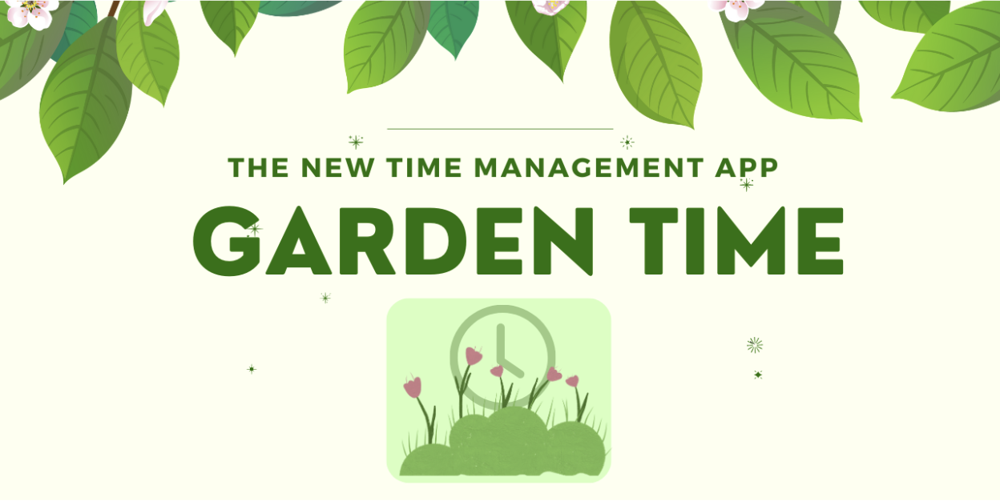

Garden Time 🌷
Home Page

Team Members:
Bella Brannon, Emily Calkins, and Kelly Yu
Description:
This is our work for Assignment 2 for Digital Humanities 110: User Interface and Design.
Process:
1. Idea proposal
Description
Garden Time is the newest time-management app that rewards you for being on top of your daily schedule. Garden Time imports your to-do lists from other apps, includes a personal habits tracker, and allows you to schedule meetings all in one place. Garden Time also incorporates gamification. Users can earn points by completing their tasks on time, and use these points to grow plants and unlock plants at new levels for their garden. They can also earn bonus plants by completing challenges.
Application Functionality
The main screen of the app will be a garden, where the user can set goals and select a plan that best supports those types of goals. For instance, a user can select an academic plan and set a goal to complete a research paper by Wednesday. If a user doesn’t complete their goals, a plant will not grow or even die. There will be separate plans with unique features, such as an academic plan that allows users to import work from Canvas and other educational platforms, a work plan that allows users to import tasks and meetings from their emails and other communication platforms, a workout plan that pairs with health applications like Apple Fitness to track fitness goals, or a productivity plan for users who wishes to set goals like to not be on social media.
Information architecture
Information will ideally be imported from other apps, so that Garden Time centralizes all information in one place for its users. The time-based features will be organized into a calendar, where users can see what is planned for each day and review what they’ve completed in the past. Users can customize and use default notifications, such as 5, 3, and 1 day reminders for big assignments. For features that do not have a deadline, like grocery or reading lists, there will be a separate section in the app where this is accessible.
User personas
...
User Journeys
...
How will this application help college students?
...
Critiques
...
2. Review the design of existing time management tools, both digital and analog.
Google Calendar
Pros:
- Comprehensive set of features to create an event (i.e. time, time zone, recurrence(s) of event, calendar type, guest invites, built in meeting links, notifications, attachments, and descriptions).
- Intuitive design for each feature (i.e. time indicated with clock icon, recurrences indicated with looping arrow, meeting links with video icons)
Easy to understand how to use and where to find the features I want to set up my event reminder with.
- Search feature to find events by keywords in event titles.
- Customizable notifications; can personalize the notifications based on how long I generally take to get ready.
- Customizable repeats of events; useful for scheduling classes for one quarter that reoccur on a unique basis and ending on a particular date
Con:
- Lots of scrolling since all features are presented in one screen. Application could be overwhelming for users who are not sure what they need or feel that they only need a few features.
- Lots of jumping between different screens. For instance, changing the number of repeats for an event takes me through at least 3 screens; one to select to repeat, one to select a default or customize a repeat, and another to customize the repeat.
The user flow is not lengthy, so seeing everything in one screen and being able to edit each section while seeing what I previously selected feels more flexible to use.
When2Meet
...
Agenda/Habit Tracker
...
3. Interviewing students about their time management tools and habits.
Interview Questions:
- What type of time management tools do you use? Please specify if you use physical or digital tools.
- What aspects of the apps/tools are most helpful for you?
- What would you add or improve these tools?
- What motivates you to get things done / stick to your habits?
- Do you have notifications for your online agenda/calendar?
Response #1: UCLA pre-med student majoring in Biology
- Google Calendar.
- Being able to block off chunks of my time and visually see when I'm available or not available.
- I would improve on the options for color because there are only a few to choose from.
- Aside from having a routine, knowing my deadlines really helps me stay on top of what needs to be completed.
- I do have notifications. Depending on the activity, I set it to alert me 10-30 minutes before the event (i.e. class would be 10 and a meeting would be 30).
Response #2: UCLA student majoring in Sociology
- ...
4.